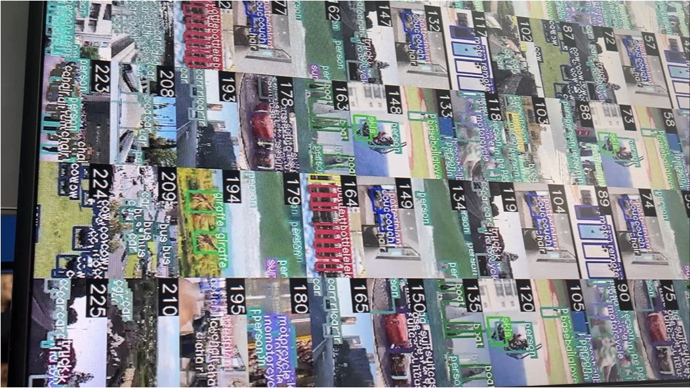
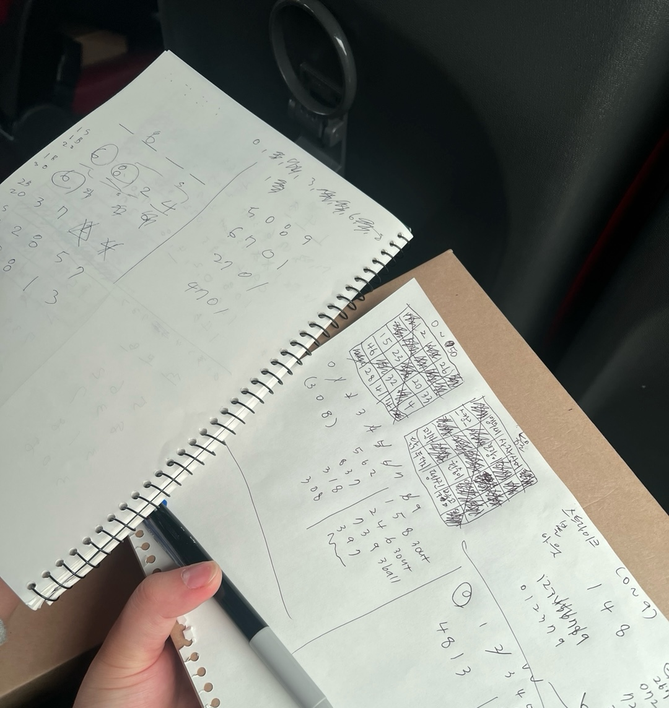
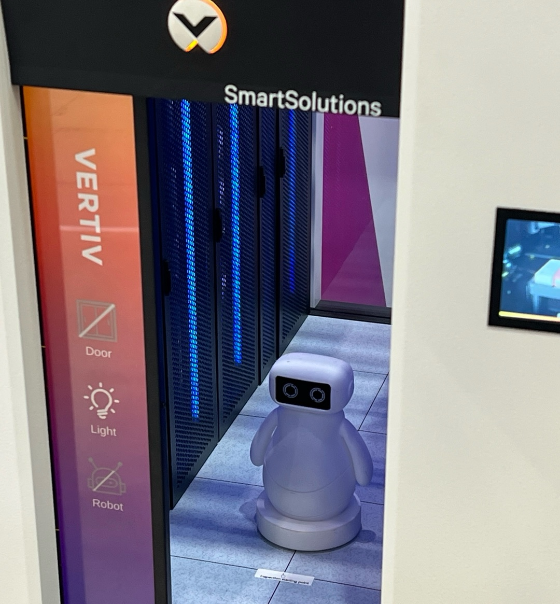
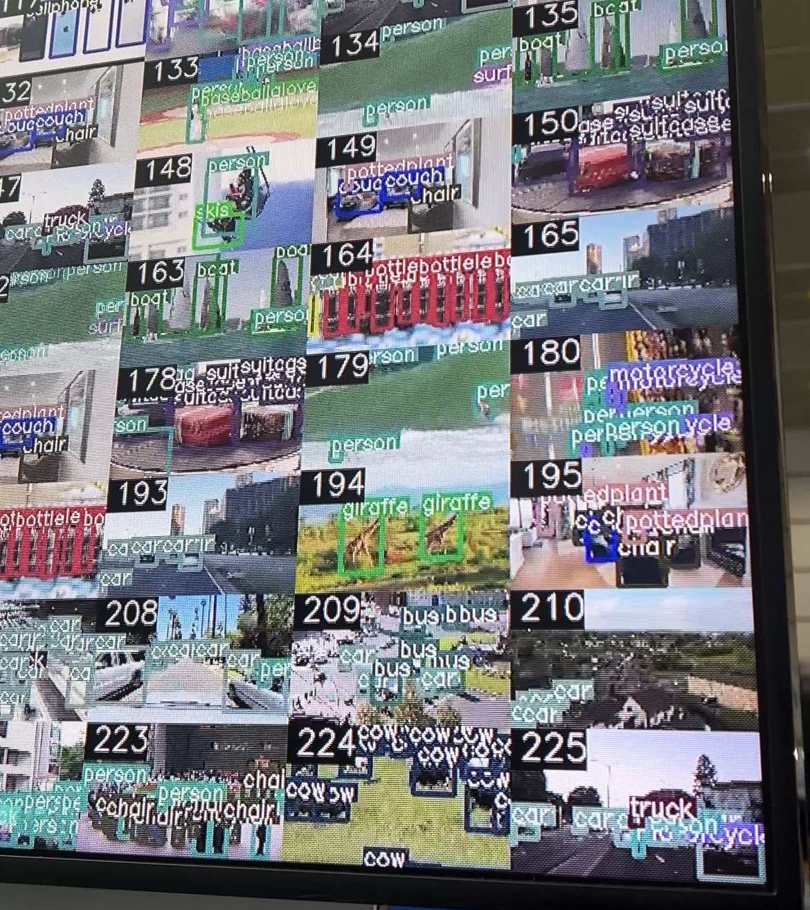
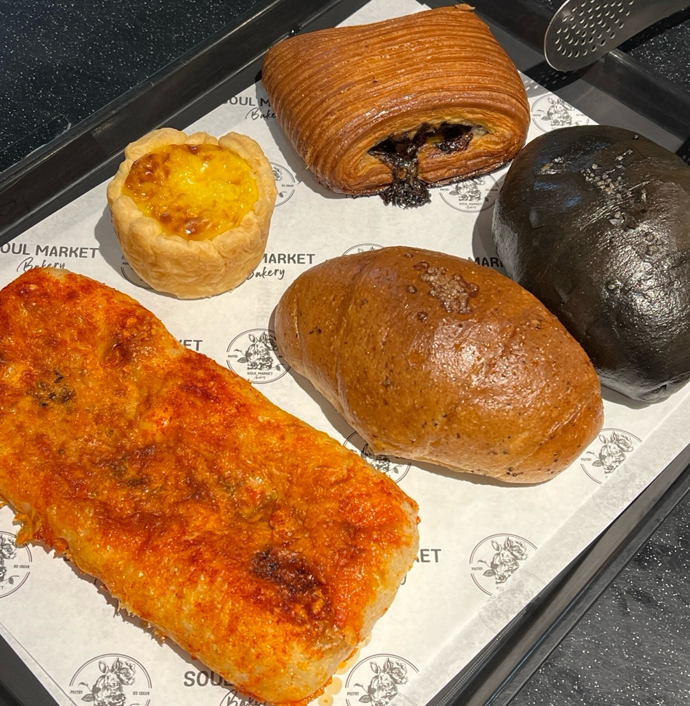
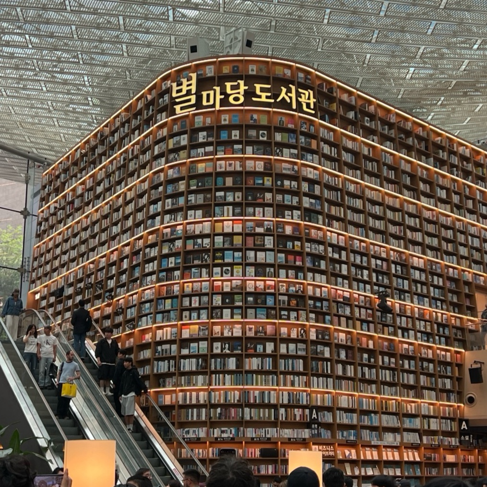

< 버스 안에서 >
오늘은 비가 엄청 내리는 날이었다.
약속시간에 다들 모여서 빠르게 버스에 탑승했다.
서울까지 약 3시간 걸리기 때문에 무엇을 하면서 갈지 고민하다가가
옆자리에 같이 앉은 친구와 대화를 나누다가 같이 게임을 하기로 했다.
주제를 하나 정하고 종이에 주제와 관련된 단어들을 적어서 빙고를 했다.
주제는 숫자, 동물로 했었고 운 좋게 내가 다 이겼다.
두번째 게임은 야구 게임을 했는데 친구가 엄청 잘해서 내가 많이 졌다.
친구가 알려줘서 처음 해보는 게임이었는데 되게 재밌었다.
나중에 친구랑 있을 때 심심하면 또 할 게임으로 생각이 날 것 같다.

< 인공지능대전 >
장소엔 12시쯤 도착했다.
건물 안으로 들어가니 사람들이 엄청 많았다.
들어가서 명찰을 받기까지 30분 정도 걸렸다.
명찰을 받고나서 14시 50분까지 전시회 관람 시간을 가졌다.
전시회장에 들어가니 사람들이 어마무시하게 많았다.
내가 모르는 기업들의 전시장들도 많아서 어디를 가야할지 가늠이 안 됐다.
일단 친구와 무작정 돌아다니다가 내가 아는 회사가 보이면 가서 관람하고 했다.

AI 전시회라고 해서 엄청난 로봇들이나 기술들이 펼쳐진 곳인줄 알았는데,
서버 구조 자체를 보여주거나 마케팅 하는 곳이 많아서 지루했다.
사전에 잘 안 알아보고 간 내 잘못이긴 했다.
그래도 Lenova나 nvidia, GPT Killer 등등 알고 있는 회사들이 있어서 흥미가 아예 사라지진 않았다.
중간중간 카톡 친추하거나 설문조사하면 경품주는 곳도 있었는데
wework라는 회사에서 돌림판 돌려서 피젯스피너를 상품으로 받았다.
돌아다니다가 어떤 한 영상을 보게 되었는데
그것은 요즘 우리가 인공지능 수업 시간 때 배우던 YOLO 기술이었다.
여러 사진들 속에서 이게 어떤 물체를 띄고 있는지 네모박스와 함께
이름표를 띄워주는 기술인데 내가 배우던 것이 있으니까 더 신기했다.

< 스타필드 코엑스몰 >
인공지능대전 전시회를 구경하다가 아직 우리가 보고 구경할 것은 아니라고
생각이 들어서 지하에 있는 스타필드 코엑스몰에 가기로 했다.
내가 제대로 안 알아보고 온 것도 있고 이런 쪽에 관심이 크게 있진 않아서
솔직히 말하면 스타필드가 더 볼 게 많고 재밌었다..
친구들과 블루리본이 많던 PEER라는 카페도 가고
SOUL Market이라는 빵집도 가서 집에 사갈 빵도 샀다.

또, 별마당 도서관에도 가봤다.
사진으로만 봤어서 궁금했던 곳이었는데 가보니까
엄청 크고 웅장하긴 했다.
사진 찍을 거 찍고 어디갈까 하다가
아디다스랑 자라 매장도 가서 구경해봤다.
약속한 관람 시간이 다가와서 모이기로 했던 장소로 갔다.
여전히 사람은 많고 비가 와서 습하고 더웠었다.
3시에 서울에 남을 사람을 제외하고 다시 버스에 타고 학교로 돌아갔다.
돌아가는 길엔 친구와 이런저런 대화를 나누다가
계속 졸면서 갔던 것 같다.